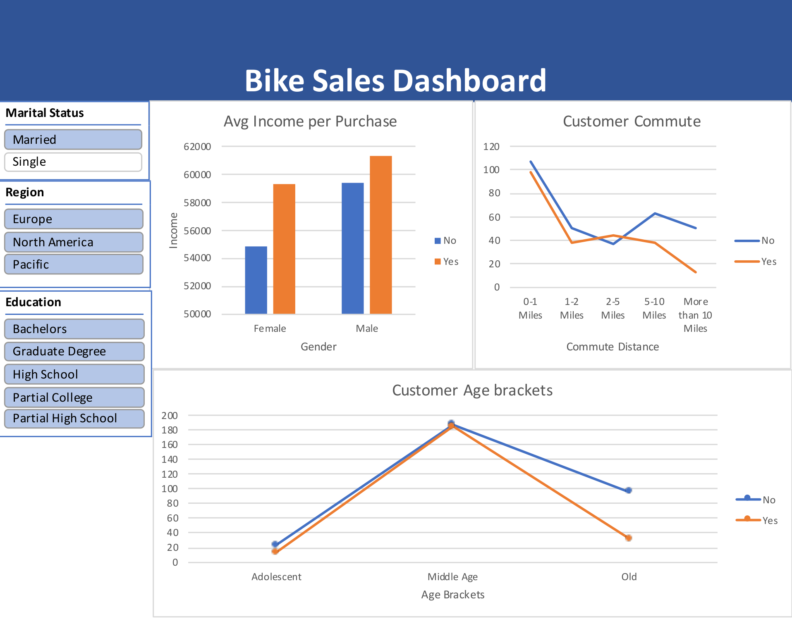

Quantitative Projects
Statistical modeling, survival analysis, and data projects relevant to actuarial and risk work.

Titanic Survival
Analysis (SAS)
Classic survival-analysis dataset (891 × 12): full SAS pipeline from import to export, with DATA step and PROC SQL, exploring passenger survival factors—foundational practice for mortality and event-time modeling in actuarial work.
View Project
College Tuition
& ROI Analysis
Analyzed the correlation between tuition fees and income levels across US states. Investigated whether higher tuition correlates with increased early and mid-career pay—relevant to long-horizon financial planning and benefit valuation.
View Dashboard
Bike Sales
Performance
Built a sales dashboard with advanced Excel and Pivot Tables to track KPIs and customer demographics—practice in trend monitoring and segment-level reporting common in experience studies.
View Project
Beck's Hybrids
Symposium
Purdue Corporate Partners project on seed quality and germination: field and lab data, predictive modeling on germination outcomes, and hybrid performance by location—experience in multivariate risk-factor analysis.
View ProjectStarbucks Drinks
& Store Locations
An interactive dashboard visualizing nutritional features of Starbucks drinks and analyzing store distribution patterns globally.
View Dashboard
Motion Detection
& Localization
Course lab: microcontroller camera on a breadboard, serial frame capture on PC, background subtraction and a grid-based rule to localize motion (implementation not published).
View ProjectMajor & Salary
Exploratory Analysis
Conducted EDA on college graduate datasets to identify popular majors and the correlation between field of study, employment rates, and salary outcomes—relevant to mortality/morbidity covariate selection and population segmentation.
View Code on Kaggle